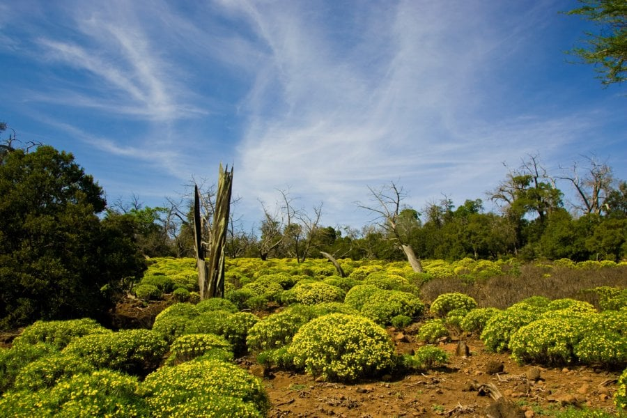
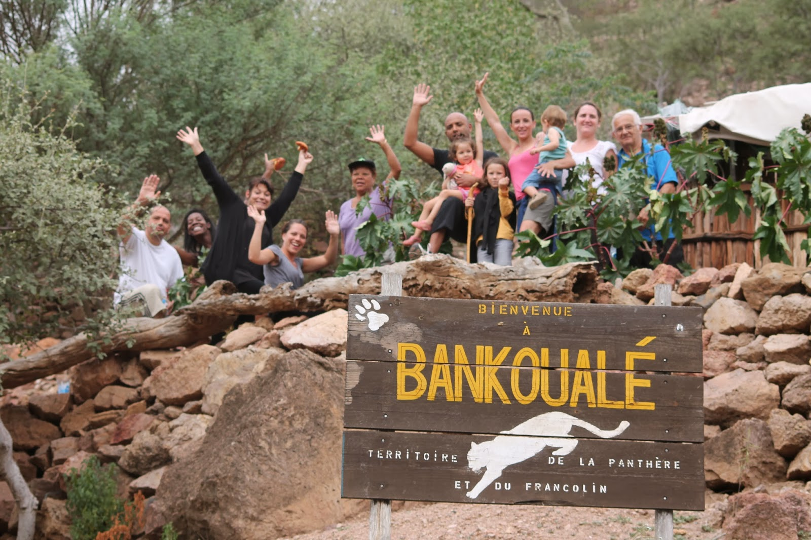
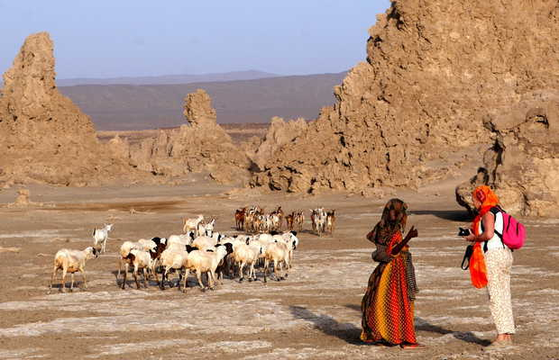
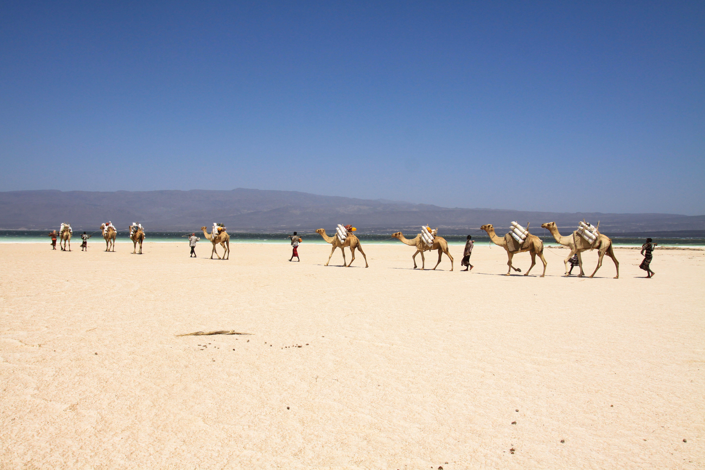

Transports et guides touristiques de Djibouti
"Transformez vos rêves de voyage en réalité avec notre équipe de transport et de guides touristiques passionnés."
Des centres touristiques agrées
Symbole de l’habitat nomade de la région, le toukoule est une hutte traditionnelle construite avec des branches, des tiges de palmier, de la paille et des tissus. Sa forme ronde ou ovale permet de résister aux vents des montagnes. Facilement démontable, il accompagne les familles dans leurs déplacements saisonniers.
"Un Voyage au Cœur des Sites Incontournables"
La Forêt du Day
Située dans le massif du Goda, à environ 1500 mètres d’altitude, la Forêt du Day est un espace unique en son genre à Djibouti. Elle abrite des essences rares comme le genévrier africain (Juniperus procera), des acacias et des euphorbes. Jadis plus dense, la forêt subit aujourd’hui les effets conjugués de la sécheresse et du pâturage. Refuge d’espèces endémiques, notamment le célèbre Francolin de Djibouti, elle représente un écosystème fragile au cœur du paysage montagneux.
Bankoualé
Niché dans les contreforts du massif du Goda, Bankoualé est réputé pour ses jardins en terrasses et ses palmeraies. Ce village est traversé par une rivière saisonnière, ce qui favorise une agriculture vivrière encore pratiquée traditionnellement. C’est un lieu verdoyant, connu aussi pour ses balades et ses panoramas pittoresques, un havre de fraîcheur dans un environnement généralement aride.
Le Lac Abbé
Au sud-ouest du pays, à la frontière avec l’Éthiopie, s’étend le Lac Abbé, célèbre pour ses paysages lunaires. De gigantesques cheminées calcaires s’élèvent du sol, formées par des sources chaudes souterraines. Le lac est également un lieu de vie pour les flamants roses et autres oiseaux migrateurs. Mystérieux et presque irréel, le Lac Abbé fascine les visiteurs par son atmosphère hors du temps.
Le Lac Assal
Le Lac Assal, situé à 155 mètres sous le niveau de la mer, est le point le plus bas d’Afrique. Bordé par des champs de sel étincelants, il est l’un des lacs les plus salés du monde. Son eau turquoise contraste avec les paysages volcaniques environnants. Exploité depuis des siècles pour le commerce du sel, le site est aujourd’hui une curiosité naturelle et géologique majeure, symbole de l’extrême beauté minérale de Djibouti.